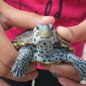
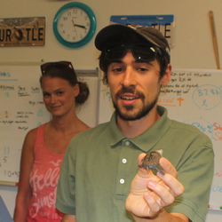
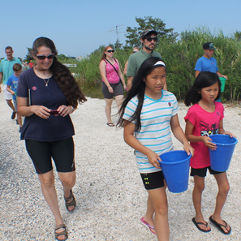
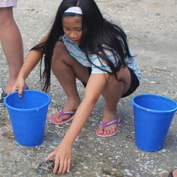

Behind the Boardwalk:
Greetings from Asbury Park, NJ
Behind the Boardwalk:
Greetings from Asbury Park, NJ
An excerpt from the forthcoming book,
Wading Right In: Discovering the Nature of Wetlands by Catherine Owen Koning and Sharon Ashworth.
For me, hope for the future, hope for the planet, springs from meeting people who devote their lives to saving our most delicate and vulnerable co-inhabitants, the animals, plants, fungi and microbiota that make the world livable and beautiful. What follows is the story of one such encounter.
-Catherine Owen Koning

Gathered around a small table, twenty-three people peered excitedly into two gray plastic bins. One bin held four thumb-sized turtle hatchlings, and in the other, thirteen palm-sized turtles scrambled on top of each other in an attempt to escape. Named for the roughly diamond-shaped plates (or scutes) on their backs, this small group of diamond-backed terrapins seemed to know that their freedom was near at hand. Seventeen family groups awaited the chance to release "their" adopted baby turtle into the wild.
We had driven to the New Jersey shore from New Hampshire, two mothers and two daughters in a small car on a warm July weekend. After disentangling ourselves from the concrete highways, steel bridges and industrial landscapes of Manhattan and northern NJ, we found ourselves gazing at miles and miles of salt marsh so green and healthy it seemed to glow. Famous primarily for Atlantic City, boardwalks and Bruce Springsteen, the barrier coastal islands and marshes of southern NJ harbor some of the best wildlife habitat in the world. The salt marshes formed in the extensive bays between the coastal dunes, spits and barrier beaches at the ocean's edge. Every visitor passing over the bridges and causeways to the boardwalks of Ocean City and beaches of Cape May is treated to views of the many egrets, osprey, laughing gulls and shorebirds who live and hunt in the marshes. But only those who paddle slowly and carefully get to see the more secretive species, such as the diamondback terrapins.
Diamondbacks can hold their own in a beauty contest with painteds, spotteds, Blanding's and other colorful turtles. Part of their visual appeal lies in their surprising variability: Their shells could be rusty-orange to light gray to brown, their heads, necks and legs may sport constellations of small black dots or elaborate patterns of larger dots and dashes, against backgrounds ranging from an almost-white to dark gray.

All of the turtles scrambling in the bins in front of us were females. Thanks to the efforts of the non-profit conservation organization The Wetlands Institute, of Stone Harbor, NJ, these little ladies had been saved from certain death after their mothers had been hit by cars. The eggs were removed and incubated at 30 degrees C; at this warm temperature, only females will be produced, because it is the temperature experienced by the developing egg that determines whether the embryo will become a male or a female. "As anyone who spends time around here knows, terrapins are always trying to cross the road, and a lot of them don't make it," Brian Williamson, research scientist at the Institute, explained to the animated group of turtle adopters. "Over 500 turtles are killed by cars each year in this area. We have 512 eggs in the incubators right now," he explained. "We want to replace the females that are killed, so there can be a sustainable population in this area." The Wetland Institute staff also puts up barriers to keep the females from crossing the road, directing them to safe and suitable nesting areas.
Young turtles and males spend their whole life in the salt water of the bays and marshes along the Atlantic coast from South Carolina to Cape Cod. Only the pregnant females ever leave the water, because they must lay their eggs in a dry, protected spot, putting themselves in grave danger on the way to and from their nest. Females lay up to a dozen eggs, and most of them will have two nests each season. The eggs take seventy days to hatch. The eggs that are rescued from the roadkilled mothers are incubated and kept for one year in the aquaria at the Institute before being released. Surprisingly, the tiny, one-inch long turtles and the others, four times their size, were all one-year olds! "Some of them just eat more and grow faster," explains Brian.
Brian then showed a tiny "pit tag", about the size of a staple. "These are injected into the larger hatchlings, so if we catch one again, we can scan it with the handheld laser scanner, and it gives us the number. That's how we know how old it is, where and when it was released."

Now the time came for each group to choose its newest family member. Each family had donated $50 to the Institute for the privilege of adopting and releasing one of these entrancing little turtles. The tiny turtles went fastest, but no one seemed disappointed with their new relative. Into a blue bucket went each turtle, its transfer to the beach entrusted to wide-eyed eight-year olds, beaming teenagers and rapturous adults. After receiving thorough instruction about how to hold a turtle, and what to do at the water's edge, the group travelled carefully down the walkway. On the path, constructed of sand and gravel, we passed at least a dozen black wire cages, protecting terrapin nests discovered by Institute interns on their daily rounds. "We have found over 80 nests this year," Brian explained. "We continue to monitor them, to see if the hatchlings emerge on their own or if the nest gets dug up and eaten by predators, despite the cage that protects them."

Finally, the big moment. One at a time, my daughter, Mia, and her friend Elyse removed their turtles (named "Terry Pin" and "Coral") from the buckets, leaned over, and gently let them go, watching as they paddled into the water. Immediately, both turtles turned around and tried to walk up onto dry land. "They aren't ready to go!" one woman commented. Mia picked Terry up and let her go closer to the salt marsh grasses under the dock, where the little turtle disappeared into the watery darkness. Elyse gently turned Coral around to face the water. Hesitating only a moment this time, she swam off.
We spent the next half-hour picking our way carefully along the water's edge, watching the tiny turtles navigate the wettest parts of the salt marsh, and running back and forth on the dock, trying to find the larger turtles in the open water. As they popped their heads up all over to take a look at the big wide world, they seemed to be enjoying the feel of the open water. In the view of the interns who helped out at the release, it was a successful release, because, they said, "no one cried." Apparently, some children become very attached to their adopted turtle sister on the short walk from the building to the bay. I can relate. I am attached, connected to those turtles, as surely as we are all connected to this blue-green paradise we are so fortunate to call home.
Photos by Catherine Owen Koning
©2016, The 2100 Project

{kind=link}
{kind=link}
{kind=link}
{kind=link}